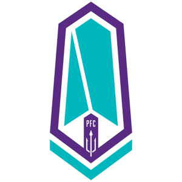
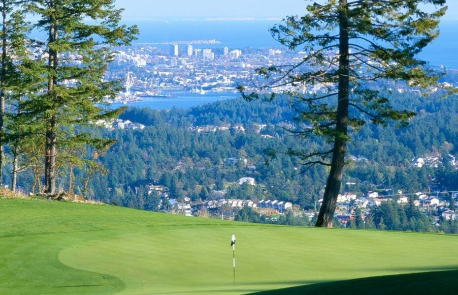
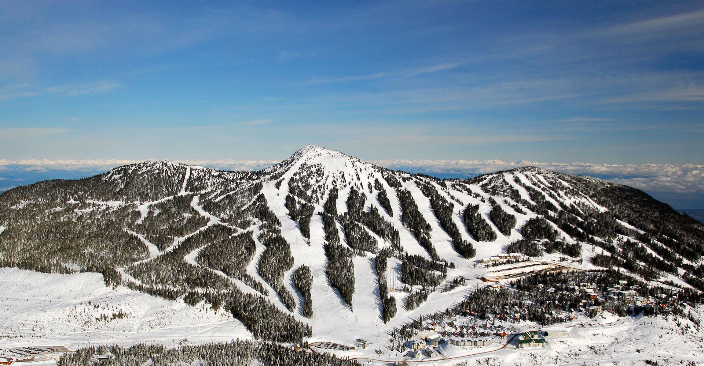

Map of Victoria
Current Weather
Victoria, British Columbia (BC)
Professional Teams
Pacific FC - CPL Soccer:

Season: March to October
Venue: Starlight Stadium
Website: Pacific FC
Twitter: @Pacificfccpl
Recreational Activities
Golf

Bear Mountain Golf Club
Website: Bear Mountain Golf Club
Location: Victoria, BC (0.5hr drive from Victoria)
Olympic View Golf Club
Website: Olympic View Golf Club
Location: Victoria, BC (0.5hr drive from Victoria)
Crown Isle Golf Resort
Website: Crown Isle Golf Resort
Location: Courtenay, BC (2.5hr drive from Victoria)
Campbell River Golf & Country Club
Website: Campbell River Golf & Country Club
Location: Campbell River, BC (3hr drive from Victoria)
Website: Bear Mountain Golf Club
Location: Victoria, BC (0.5hr drive from Victoria)
Olympic View Golf Club
Website: Olympic View Golf Club
Location: Victoria, BC (0.5hr drive from Victoria)
Crown Isle Golf Resort
Website: Crown Isle Golf Resort
Location: Courtenay, BC (2.5hr drive from Victoria)
Campbell River Golf & Country Club
Website: Campbell River Golf & Country Club
Location: Campbell River, BC (3hr drive from Victoria)
Ski

Mount Washington Alpine Resort
Website: Mount Washington Alpine Resort
Location: Mt. Washington, BC (3hr drive from Victoria)
Mount Cain Alpine Park
Website: Mount Cain Alpine Park
Location: Port McNeill, BC (4.5hr drive from Victoria)
Website: Mount Washington Alpine Resort
Location: Mt. Washington, BC (3hr drive from Victoria)
Mount Cain Alpine Park
Website: Mount Cain Alpine Park
Location: Port McNeill, BC (4.5hr drive from Victoria)